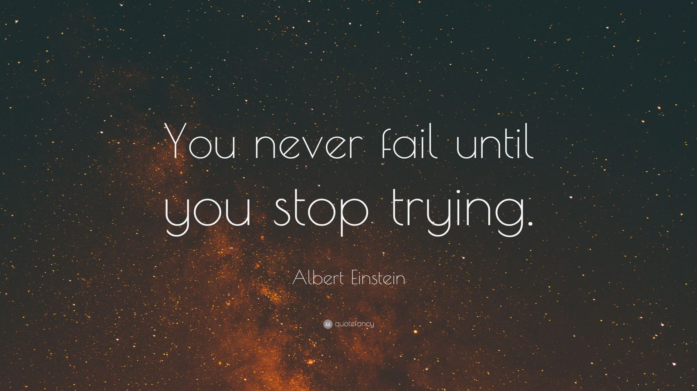
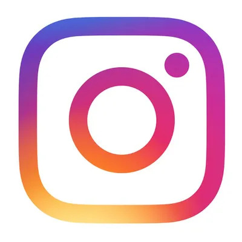
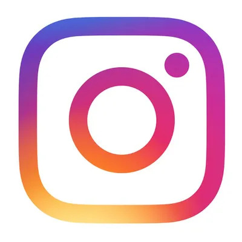

Formação acadêmica
Ensino médio completo
Faculdade UVV
Ciência da Computação
Inicio: fevereiro de 2022
Fim: previsão para dezembro de 2026
Experiência profissional
Estágio em auxiliar de padaria
Padaria Napolitana
Inicio: Abril de 2019
Fim: Abril de 2020
Deveres
- Atendimento ao cliente.
- Limpeza de ambiente.
- Auxiliar o padeiro de forma geral.
Vendedor de Informática
DL Informática
Inicio: Setembro de 2020
Fim: Outubro de 2021
Deveres:
- Atendimento ao cliente.
- Vendas de produtos de informática.
- Fazer a manutenção em computadores e notebooks.
 
